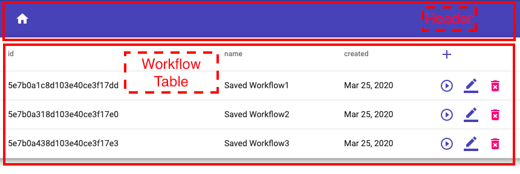
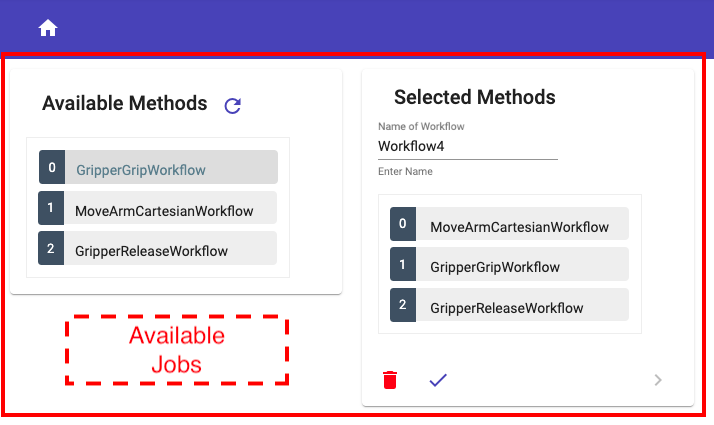
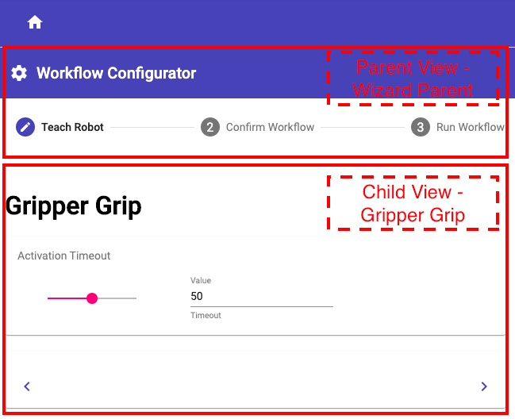
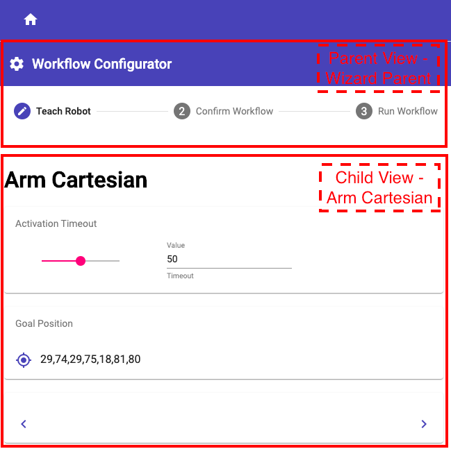
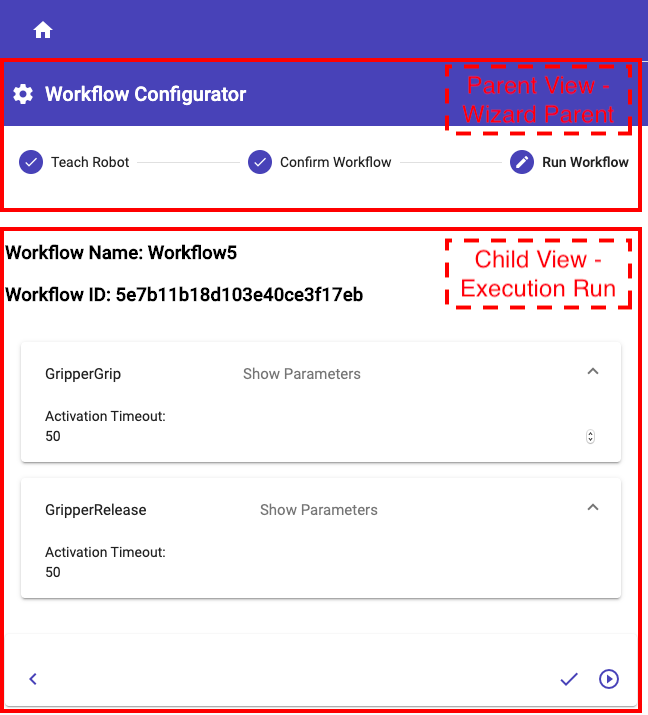
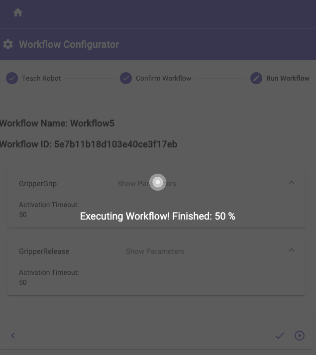

Robot Teaching is a web-based user interface for programming mobile manipulators like CHIMERA.
The so-called "Teach-In" procedure is used to program the robot.
The web application is based on the "MEAN" Stack which stands for
For the documentation of the "Front-End" Compodoc was used.
Compodoc is a documentation tool for Angular applications. Basically it generates a static documentation for the application.
For this application the documentation was extended. Under Additional Documentation you will find detailed instructions for adding new robot methods. In the manner of a tutorial every single step is explained in detail. Screenshots and direct links to the affected code passages help the developer to understand how to extend the program.
To install Compodoc enter
npm install -g @compodoc/compodoc
in terminal. A detailed description you find here. If you change the code and want to generate an updated documentation enter:
compodoc -p tsconfig.json -s -a screenshots --includes additional-doc
This command also includes the part of the Additional Documentation in the updated documentation.
The URL Address for connecting to backend can be set in environments files.
Link to Environment Files variables.
Path to directory "src/environments/environment.ts".
Path to directory "src/environments/environment.prod.ts".
In the following, the structure of the components will be illustrated.

Link to Header component.
Link to Workflow Table component.

Link to Available Jobs component.

Link to Wizard Parent parent component.
Link to Wizard Gripper Grip child component.

Link to Wizard Parent parent component.
Link to Wizard Arm Cartesian child component.

Link to Wizard Parent parent component.
Link to Execution Run child component.

Link to Execution Run component.